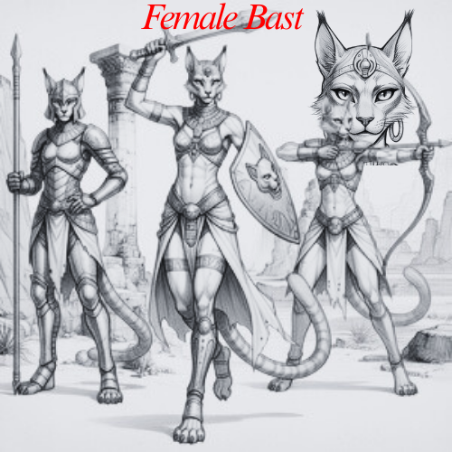
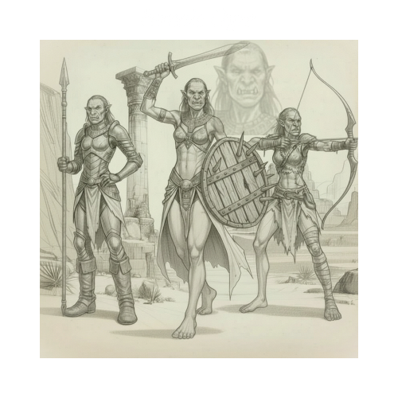
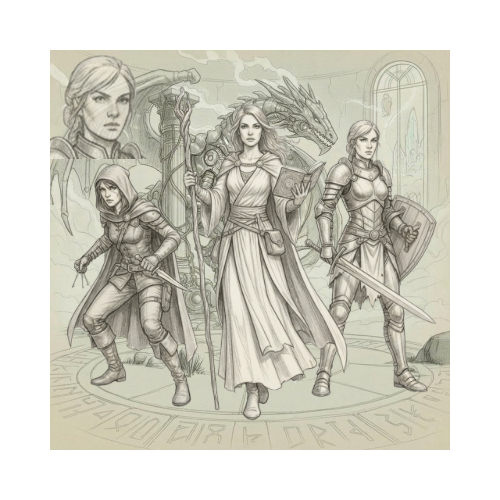

Only human available for beta. Select your race to begin customizing your female character. Each race offers unique traits and cultures to explore.
Goliath Size

Bast
Feline humanoids, agile and graceful.
 Bugbear
Bugbear
Large, strong, and stealthy, often living in forests or mountains.
 Firbolg
Firbolg
Gentle giants with nature magic, often in forests.

Ogre
Huge and strong, often solitary or in small groups.
 Troll
Troll
Regenerative and formidable, usually dwelling in caves or mountains.
Standard Size

Human
Versatile beings known for their adaptability and ingenuity across cultures and environments.
 Blood Draco
Blood Draco
Imperial humans with dragon blood, strong and charismatic.
 Orc
Orc
Powerful resilient fighters.
 Vanwa
Vanwa
Tall, noble, 6-7 feet.
 Drow
Drow
Dark elves skilled in stealth and magic.
/a>
Small Size
 Brownie
Brownie
Small, magical, lucky, around 4 feet.
 Halfling
Halfling
Cheerful, resourceful, about 3 feet.
 Pinkling
Pinkling
Mischievous hermit-like creatures with pink hue.
 Yawnie
Yawnie
Very small, slothlike creatures,
4 feet.
Hybrid (Goliath + Small)
 Hybrid
Hybrid
Up to 4 races combined, traits averaged proportionally.